Quotes that disappeared
A quote was only saved once the application started. If the client called back three days later, the agent started over.
I redesigned how MiBupa agents quote and apply for a health policy, starting from what the business, operations and legal teams raised in a co-creation workshop.
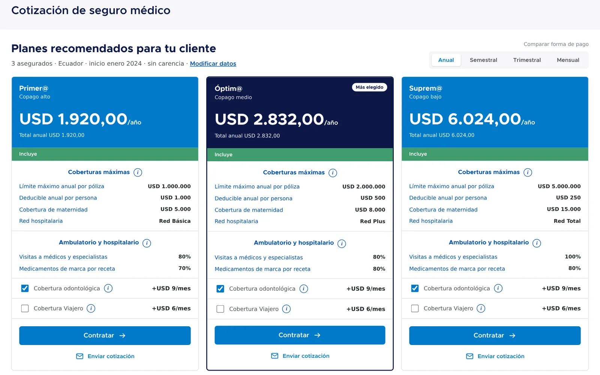
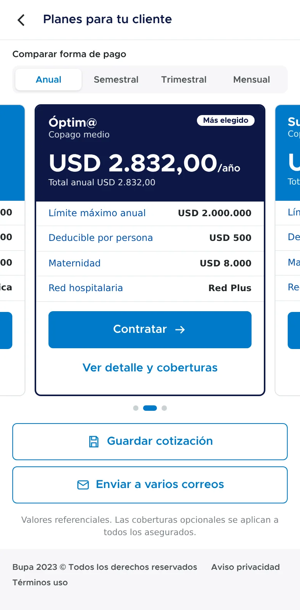
PACO, Bupa’s customer experience and omnichannel project, was redesigning the MiBupa portal and app for clients and agents. Along the way, the team set aside the transactions at the core of the business. One of them was quoting a health plan and applying for the policy, used every day by agents in Ecuador and across Latin America.
A quote was only saved once the application started. If the client called back three days later, the agent started over.
Adding a child or an optional cover later changed the premium, but the PDF the client received kept the first value.
Payment frequency was fixed at the start and could not be changed at the end. Clients changed their minds after signing, and issuance redid the work.
Income, employment and financial questions sat in the middle of the health application, and the regulator changed them every year.
When GFT proposed a focused redesign of the quote and the policy application for agents, I joined as one of the two designers responsible for carrying the workshop decisions into the screens.
Pain points, legal constraints and open questions from the session became the requirements for each screen.
The quote, plan comparison and seven application steps, for desktop and mobile, with PACO’s components and patterns.
Navigable flows for the business and development teams, and for the planned sessions with agents.
The rating engine was a closed system: the interface sent the data and showed what came back. Mexico used its own engine and stayed out of scope. Ecuadorian law decided the regulatory form, the consent texts and which health questions must always be asked. And the screens had to reuse what PACO had already built.
No agents could join, so we invited the people who work with them every day. We went through the current flow screen by screen, asking why each field existed and what happened when it went wrong.
hours of remote co-creation, recorded and shared
areas invited, from IT and architecture to commercial, operations and legal
screens in the redesign scope, desktop for agents
“If they add the dependants later, the PDF still shows the old value.”
Commercial team
“The client no longer wants annual. It is a reprocess for everyone.”
Issuance team
“We want the health application to be only health information.”
Product team
Agents change covers in front of the client. A wizard would add clicks every time the client asks how much they save.
Gender-specific health questions must appear for everyone. If the question is skipped, a false declaration cannot be claimed later.
New regulator fields had arrived two weeks earlier. Keeping them in the flow meant redesigning screens every year.
Each decision answers something said in the session. The prototypes number them on the screens, so they can be checked in context.
Not getting a quote back was one of the agents’ main complaints.
Save the quote to “My quotes”, valid for 30 days, and resume it later. Expired quotes leave the list on their own.
Adding a dependant later changed the premium without warning.
Adding or removing someone shows the current and the new premium before confirming, and the header updates.
Clients changed payment frequency after signing.
Compare frequencies in the quote, with the total yearly cost of each one, and choose only in Billing.
Regulatory questions inside the health application.
Income, employment and financial sections leave the flow. The regulatory form is signed with the application, in one step.
Agents read the questions aloud and lost track across family members.
One block per insured person, no default answers, and gender-specific questions always visible.
Boxes ticked without a file, or 20-page PDFs.
One upload slot per required document, with format and size limits shown before uploading.
Consent in the middle of the flow, mixing client and agent texts.
Consent at the end, split into client and agent, with the send-to-signature confirmation on the same screen.
Agents typed their own email instead of the client’s.
One email, labelled as the client’s e-signature address and validated. The summary shows it with a link to correct it, without typing it twice.
The screens below follow the main flow for an agent, from the quote to the application sent for signature. They come from the 2026 working prototype and use fictitious data.
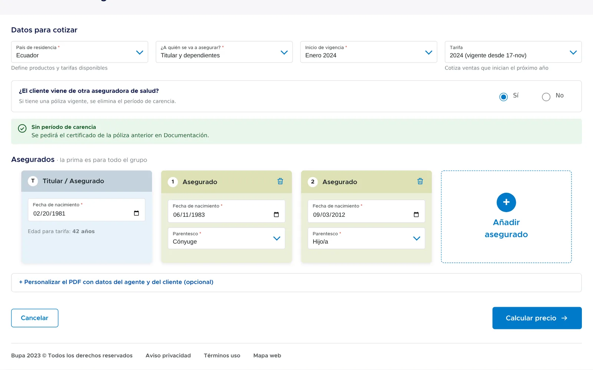
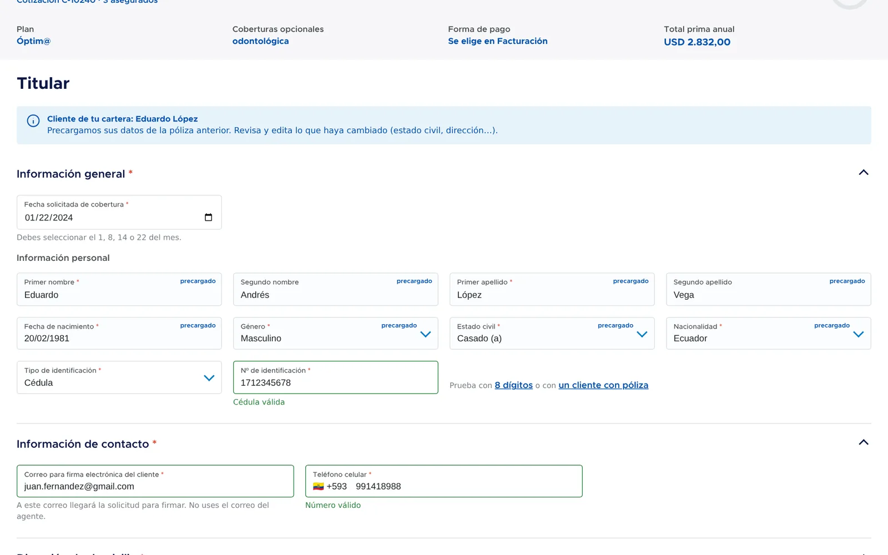
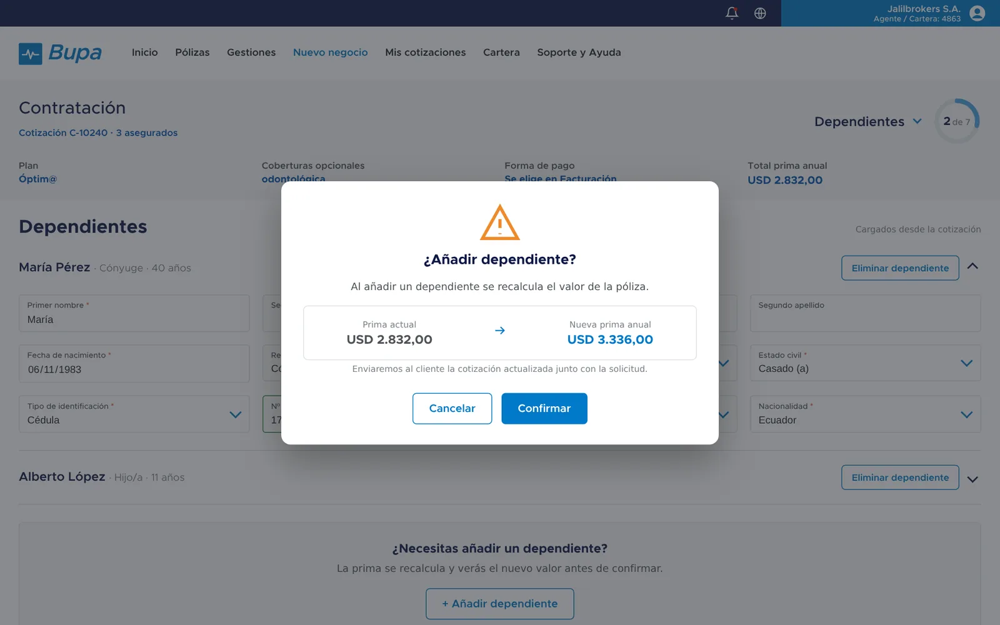
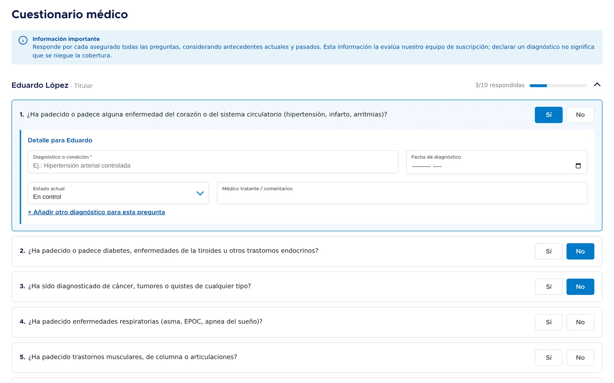
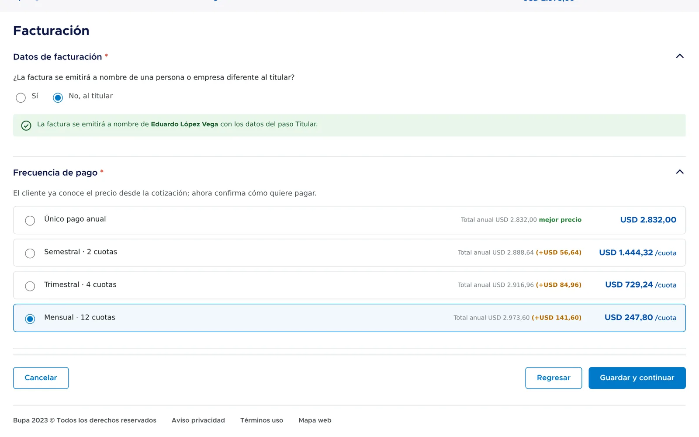
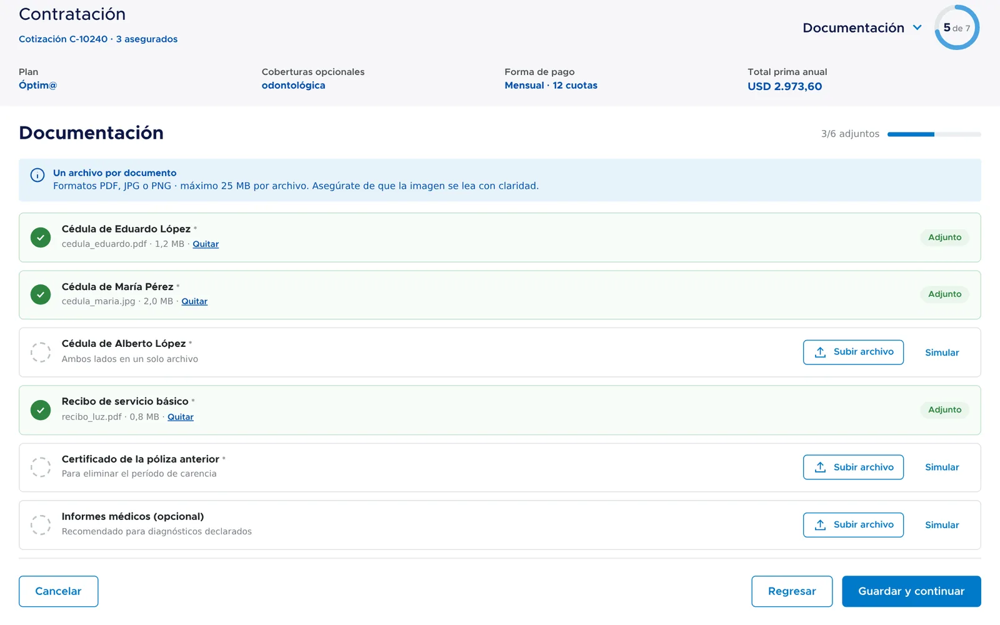
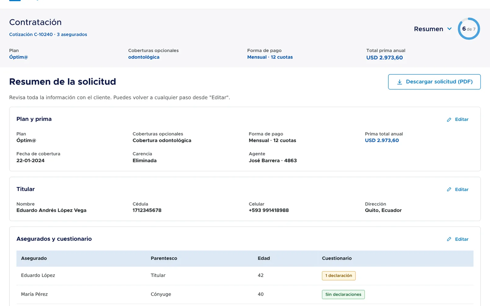
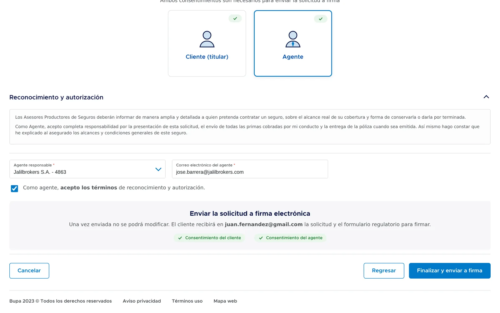
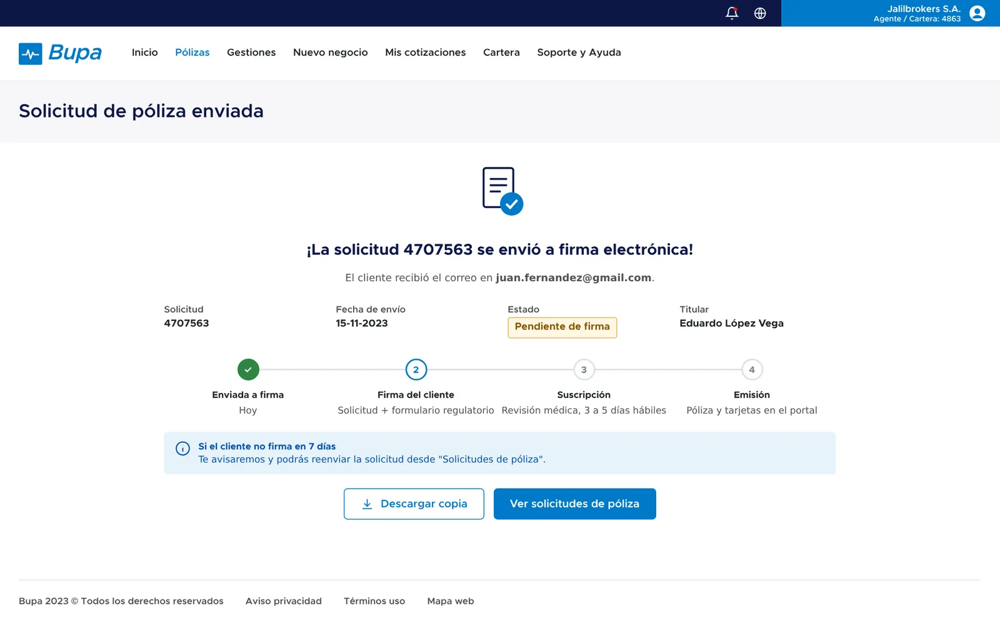
Country first, because it defines products and rating. Whether the client comes from another insurer is asked here, so the waiting period is clear from the start.
All plans on one screen, as agents asked. Benefit tables open without leaving the quote, and the quote can be saved or sent to several emails.
Data from the agent’s portfolio comes preloaded and editable. The ID is checked for ten digits and for an existing policy. No more income or employment sections.
Loaded from the quote. Adding or removing someone shows the new premium before confirming, so the price the client signs matches the one they saw.
One person at a time, with progress for each and no answer selected by default. A “yes” opens the details right under the question.
The payment decision moves here, with the total yearly cost and the surcharge for paying in instalments next to each option.
One slot per required document, per person. The step only continues when every required file is attached.
Replaces the separate download step. Every section can be edited, the PDF is one button away, and the e-signature email is shown, not typed again.
The last step, split into client and agent. Sending to signature is confirmed here, without an extra “Are you sure?” dialog.
The application is pending signature, and the agent sees what happens next. Before, this screen reused the reimbursement confirmation.
On mobile, insured people and plans become carousels, dialogs become bottom sheets and the current step stays pinned at the top with the premium. The decisions are the same; only the layout changes.
Explore the mobile version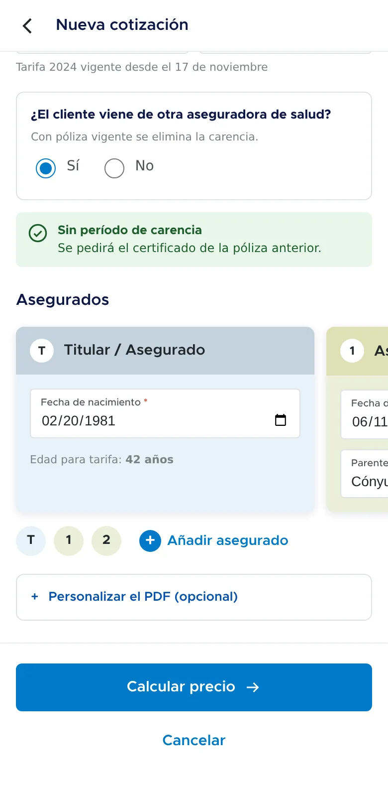
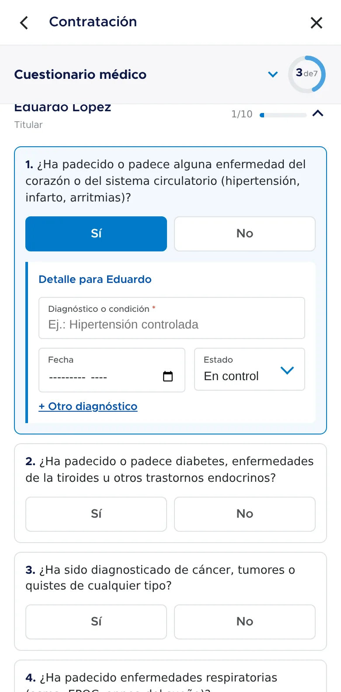
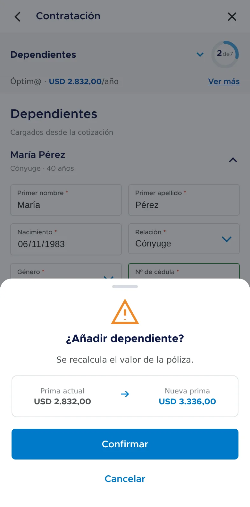
The workshop opened with a clear goal: improve the experience to reduce costs and sell more policies. These are the gains each decision aimed for. I left before launch data existed, so none of them is a measured result.
The separate download step, the “Are you sure?” dialog and typing the email twice.
Income, employment and financial information leave the health application.
Fewer reprocessed policies after a payment change, fewer applications waiting for a missing document, and less manual typing of regulatory data into another system.
Quotes they can resume and send to several people, data preloaded from their portfolio, and fewer steps to check before sending to signature.
The premium they sign is the one they were shown, the cost of paying in instalments is clear, and the waiting period is known from the start.
A validated signature email and ID, health questions that protect claims decisions, and a regulatory form that can change without redesigning the flow.
Reprocessed policies after a payment change
Share of issued policies that need a change of payment frequency in the first 30 days.
Applications stopped by documents
Share of applications returned to the agent for a missing or unreadable file.
Saved quotes that convert
Share of saved quotes that become an application before they expire.
Time from quote to signature
Median time between the quote and the application sent for signature, by agent.
The two figures above describe the design, compared with the previous flow reviewed in the workshop. The gains come from the workshop and the proposal and were not measured after launch. As a reference from the same team and client, PACO reduced reimbursements from 7 to 4 steps.
Reflections
The most useful people in the room were the ones who fix the errors after the sale. Issuance, legal and compliance explained why fields existed and what broke downstream, which no screen review alone would have shown. Separating the regulatory form was a decision about maintenance as much as about usability.
I would run the planned sessions with agents on the prototype, starting with the questionnaire per person, and check whether saved quotes are resumed in practice. I would also bring renewals into the same flow, since the workshop named them as the biggest need still handled in spreadsheets.
Each one numbers the workshop decisions on the screens. Or get in touch to talk about a product challenge.
All names and values in the screens are fictitious. Workshop participants are identified by team only.